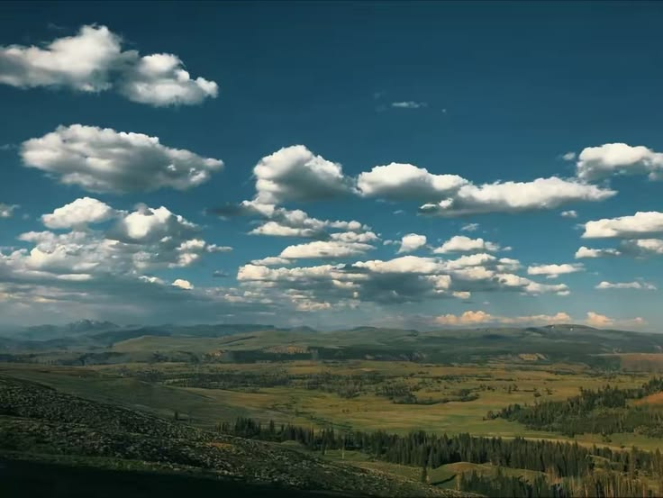

MISIÓN
Incitar a la creación de hortalizas para consumo propio con materiales reciclados para ahorrar en costos de cultivación usando semillas de rápido crecimiento y a su vez contribuyendo a la huella ecologica.

VALORES
Cuidamos la tierra usando practicas sostenibles y materiales reciclados pensando en el futuro del planeta. Creemos que los resultados se logran colaborando y apoyandose entre todos.

VISIÓN
Ser reconocidos dentro del sector del cultivo de hortalizas de alta calidad y llegar a ser una empresa que promueva el cuidado del medio ambiente.